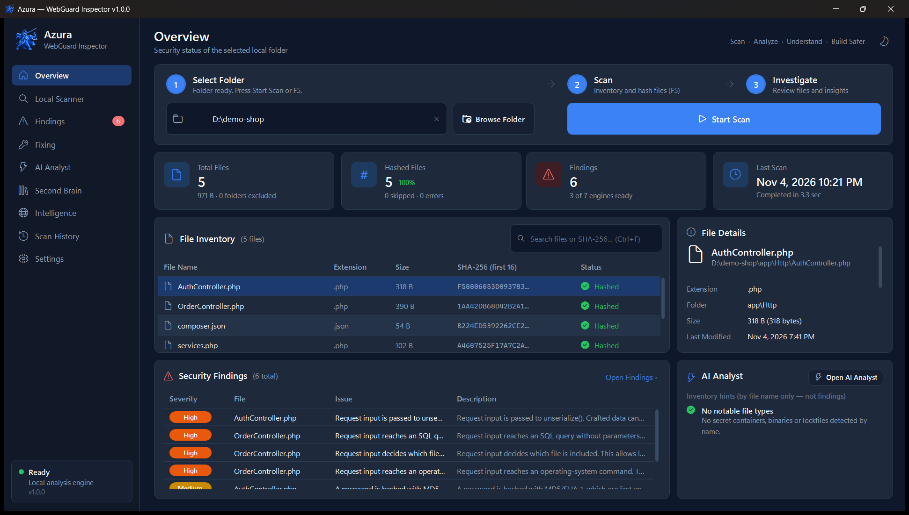
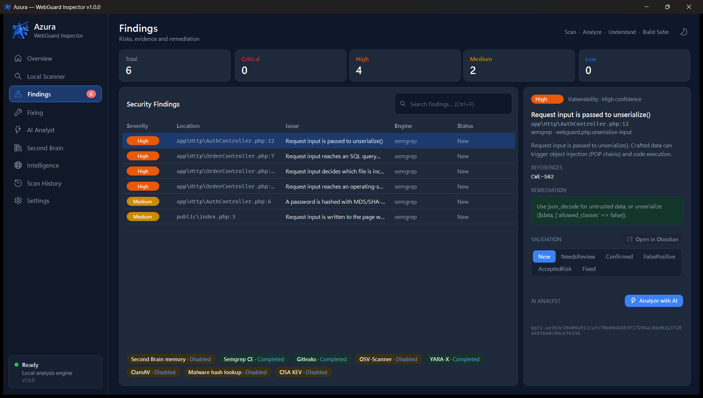

Inspeksi keamanan source code aplikasi web, sepenuhnya di PC Anda. Temukan kerentanan, secret yang bocor, dependency rentan, dan backdoor tersembunyi pada plugin, tema, maupun proyek pihak ketiga, lalu perbaiki dengan bantuan AI yang selalu Anda tinjau.

Engine deteksi yang deterministik menemukan masalah, AI membantu menjelaskan dan memperbaikinya, dan Anda yang memutuskan. Semua keputusan disimpan agar pemeriksaan berikutnya lebih cepat.
Analisis statis dengan rule PHP khusus, deteksi secret, audit dependency, signature malware dan web shell, serta antivirus.
Cek hash file ke MalwareBazaar dan ThreatFox, advisory dari OSV.dev, dan tandai kerentanan yang aktif dieksploitasi (CISA KEV).
Model lokal menjelaskan setiap temuan: apa yang terjadi, mengapa berbahaya, dan usulan perbaikan. Hasilnya selalu ditandai sebagai hipotesis.
Claude atau model lokal mengusulkan perubahan sebagai diff. File baru ditulis setelah Anda menekan Apply, dengan backup, salinan "wreck", dan Undo.
Setiap scan, analisis dan keputusan disimpan di vault Obsidian. File yang tidak berubah tidak dipindai ulang, file berbahaya yang pernah dikonfirmasi langsung dikenali, dan fix lama dipakai ulang.
Setiap sesi tercatat lengkap: scan, keputusan, analisis AI, usulan dan penerapan fix. Ekspor menjadi laporan PDF yang memuat remediation dan diff.
Satu alur yang sama untuk setiap proyek, dari folder sampai laporan.
Proyek hanya dibaca, tidak pernah diunggah.
Setiap file diberi SHA-256 dan dicocokkan dengan Second Brain.
Engine memindai file yang berubah; hasil file lain dipakai ulang.
Validasi temuan, minta analisis AI, terapkan fix lewat diff.
Semua masuk Second Brain dan Scan History, siap diekspor ke PDF.
↻ Pengetahuan yang tersimpan dipakai lagi pada scan, analisis dan fixing berikutnya. Lihat alur proses lengkap →
Desktop app WPF dengan tema gelap dan terang. Contoh berikut memakai proyek demo fiktif.

Azura dibuat untuk memeriksa kode yang tidak dipercaya, tanpa membocorkan kode yang Anda lindungi.
Installer Windows berisi aplikasi beserta Gitleaks, OSV-Scanner dan YARA-X. Semgrep, ClamAV, Claude Code, Obsidian dan LM Studio bisa dipasang sekalian lewat pilihan di installer.
Atau buka halaman rilis terbaru di GitHub dan pilih file Azura-WebGuard-Inspector-Setup-<versi>.exe.
Versi berikutnya bisa dipasang dari dalam aplikasi: Settings → Updates. Setiap unduhan diverifikasi dengan SHA-256.